Measuring the Effects of Pollution Abatement in the Presence of Treatment Externalities
Michael Jerman
Department of Economics
University of Oregon
May 31, 2017
### Background
- India's rivers are heavily utilized and dangerously polluted
- 14,780 sewage treatment plants (STPs) in the United States, 234 in India
- Nearly 1 trillion USD has been spent by the government of India to combat pollution levels, widely believed to be ineffective
- No systematic study of the effectiveness of any specific policy intervention at the national level
### Overview
- Estimate the effects of a specific policy intervention (the construction of new STPs in 1995)
- Develop a novel econometric model to account for downstream pollution and treatment spillovers
- Failing to account for downstream effects can significantly bias estimated treatment effects
- Propose a methodology to analyze the political economy of STP placement and operational effectiveness
### Previous literature
- Greenstone and Hanna (2014): Find no pollution reduction on Indian river segments designated as "problem areas" by the government using a simple difference-in-differences approach
- Lipscomb and Mobarak (2015): Estimate downstream spillovers in Brazil using exogenous shifts in administrative boundaries
### Data
River monitoring stations:
- 447 stations across India
- Located along 60 river systems
- Monthly observations of fecal coliform bacteria (fcoli) from 1986 to 2004 (many missing observations)
Sewage treatment plants (STPs)
- Ministry of Environment and Forests periodically attempts to collect information on the known universe of STPs
- 107 were build in 1995 as part of the National River Conservation Plan (NRCP)
STP and Monitoring Station Locations
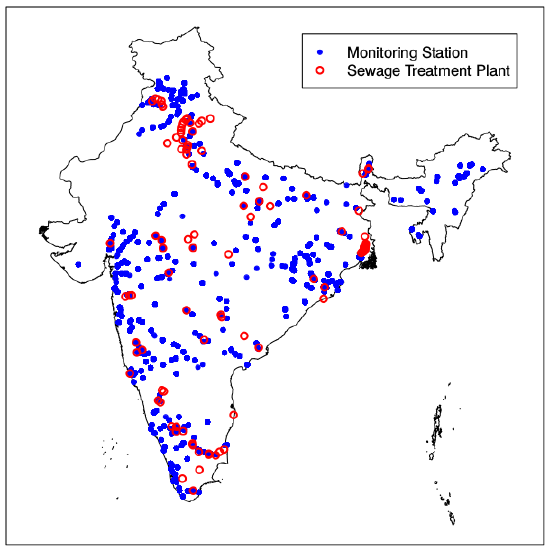
Naive difference-in-differences
Estimate by OLS:
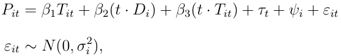
- $P_{it}$: fcoli levels measured at station i at time t
- $T_{it}$: Treatment variable equal to 1 if an STP is immediately upstream of station i
- $D_{it}$: Equal to one if station i is ever treated in the sample
Naive Diff-in-Diff Estimation Results
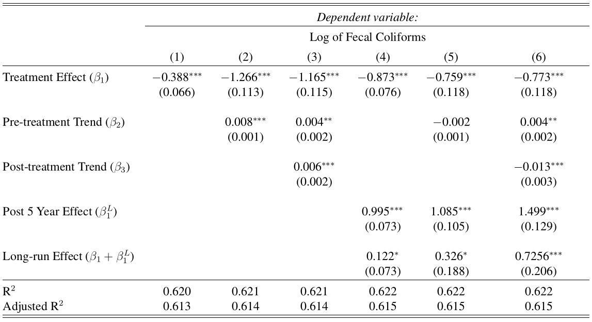
Time Interacted with Treatment
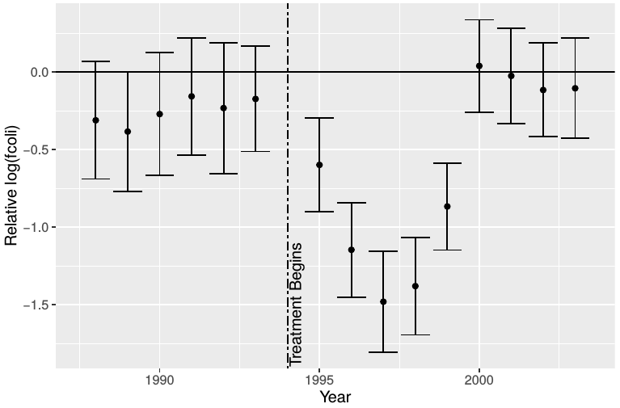
### Treatment externalities
- 447 monitoring stations along 60 river systems
- Each river system has 7.45 monitoring stations on average
- 28 river systems have one monitoring station
- The Ganga system has 109 stations
- A single STP is likely to decrease measured pollution at multiple stations, biasing the diff-in-diff
Distribution of Downstream Monitor Distance
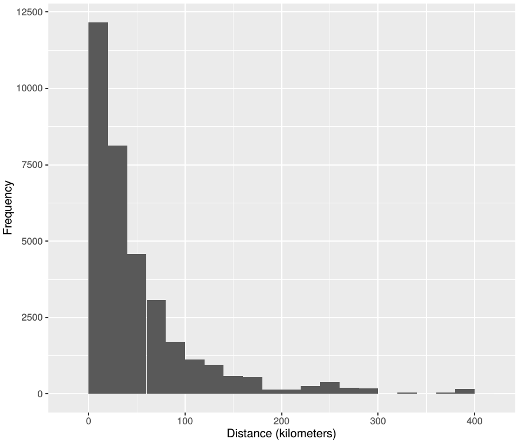
Estimating treatment externalities
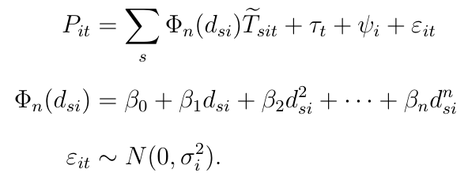
- $\tilde{T}_{sit}$: Equal to one if station i downstream of STP s
- $\Phi$: Polynomial in distance of station i from upstream STP s
Treatment Externalities
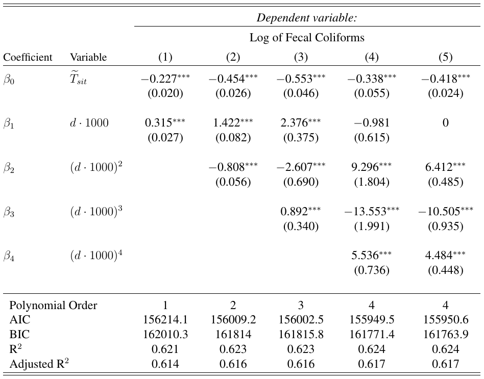
### Downstream effects
- Pollution levels measured at each monitoring station are a function of upstream pollution levels
- Shocks and treatment persist downstream, contaminating observations at each downstream station
- Biases treatment effect estimates and standard errors
- I account for this with a spatial model, where pollution observations are allowed to be functions of upstream pollution observations
Spatial model
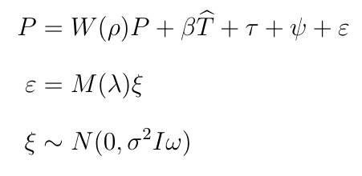
- W and M are spatial weight matrices which describe the spatial spillovers
Spatial weights
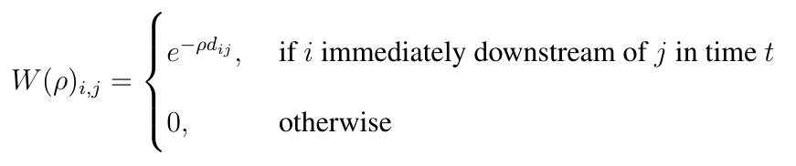
- $\rho$: Captures the rate of pollution decay through introduction of cleaner water into the system or natural organic processes
Solving the spatial model
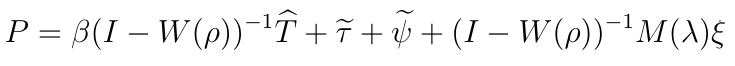
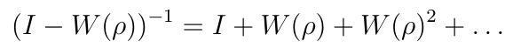
- Each entry of the matrix $W(\rho)^k$ gives the exponential of distance between an STP and the monitoring station k stations downstream
- The infinite sum therefore captures the total downstream effects of an STP on all downstream stations
- This result obtains from the novel exponential specification of the spatial weights matrix
- The error term is similarly a function of upstream errors
### Estimating the spatial model
- There are 1,124 parameters to be estimated
- MLE computationally inefficient, unlikely to converge, with unreliable Hessian estimates
- Estimated instead as a Bayesian model with uniform priors (No-U-Turn sampler)
##### (More)
### Priors
- $\rho$, $\lambda$: Exponential(1). Likelihood function is approximately uniform for large values.
- Fixed effects: Uniform
- Treatment effects: Uniform
Bayesian Estimation Results
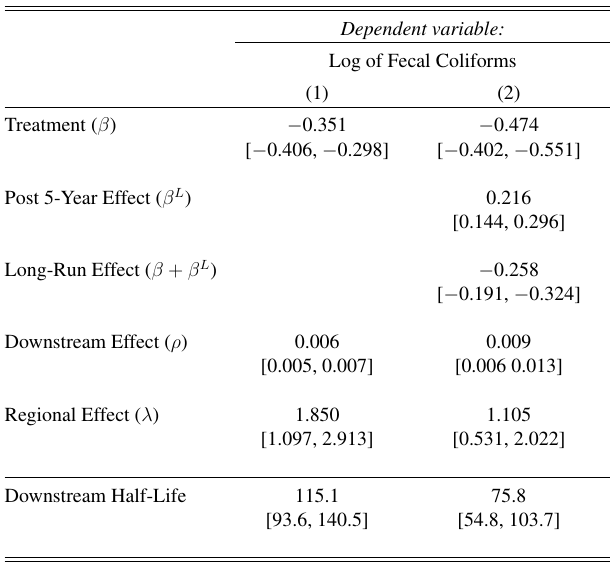
Bayesian Estimation Results
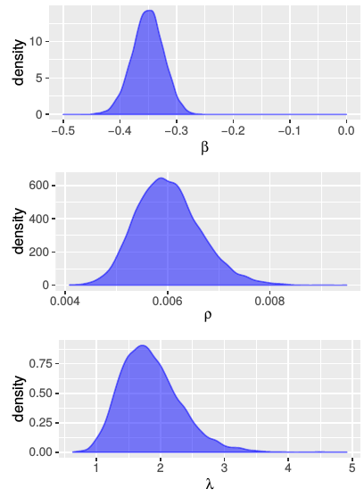
Exponential Downstream Effects
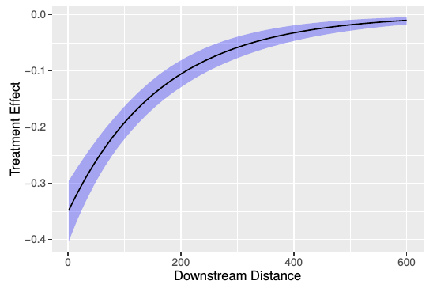
### Health benefits
- Increasing fcoli by 2.3 doubles the likelihood of contracting a gastrointestinal illness
- Estimated treatment effect will reduce this likelihood by 15% immediately downstream of a STP
- Maha Kumbh festival attracts 120 million attendees, most of whom bath in the Ganga
- An operational STP immediately upstream of the festival would eliminate approximately 600,000 cases of gastrointestinal disease
### Accounting for the decrease in effectiveness
- Government officials inspected 84 of 236 known STPs in 2007
- 55% were rated as being in "poor" or "very poor" working condition
- Many stations were entirely abandoned and overgrown with vegetation
### Ongoing research
- Use remotely-sensed luminosity, population, and watershed data to predict pollution levels along all river stretches with the spatial model described above
- Estimate optimal placement of STPs, compare to actual placement
- Investigate the political economy of STP placement and ongoing operation (elections of 1996)